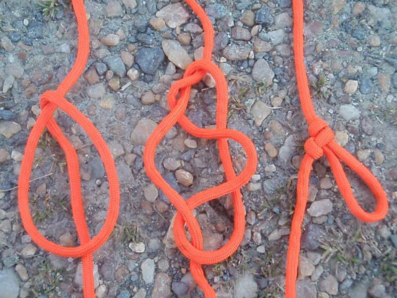

Man Harness Knot
This crafty knot allows you to put a loop in a line anywhere along the length of a rope when neither end of the line is free to tie a loop—and you didn’t hear it from me, but a man harness is great for cheating at tug of war.
How to tie a man harness:
Gather some slack in the line and make a loop so part of the line runs through the middle of the loop. Grab the side of the loop and pull it through the gap between the line in the middle and the other side of the loop. Pull the new loop tight, and then pull the line to cinch the man harness knot. This knot can slip if there isn’t constant tension on the newly created loop, so keep something in the loop to hold it.
